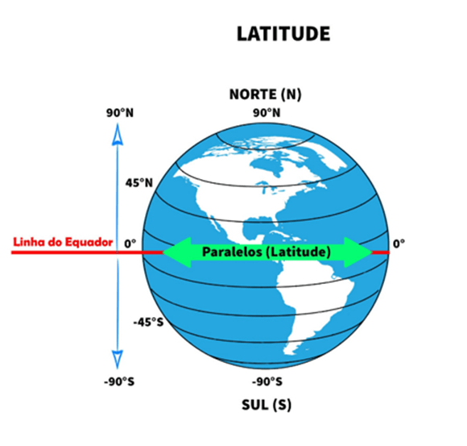
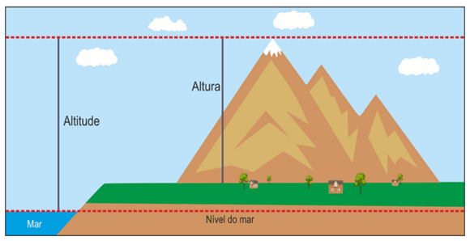
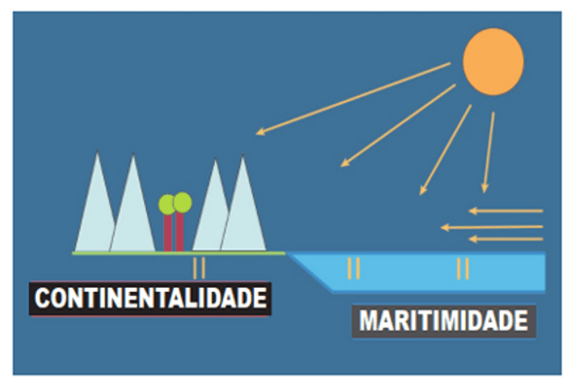
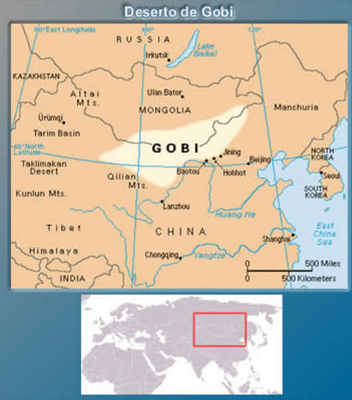
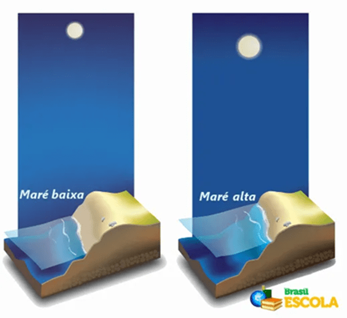
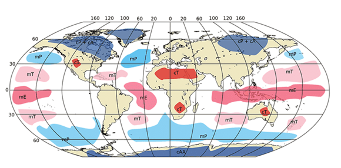
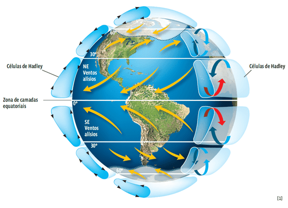

Conteúdo:
Objetivo:
Introdução
Na aula 19, demos os primeiros passos, aprendendo a diferenciar tempo e clima, além de conhecer os elementos climáticos — como a temperatura, a pressão atmosférica, a umidade, os ventos e a precipitação.
Agora, em Climatologia II, vamos avançar um pouco mais. Nesta etapa, o foco será compreender os fatores climáticos, ou seja, aqueles que modificam e explicam a diversidade de climas ao redor do mundo.
Entre eles estão a latitude, a altitude, a maritimidade e a continentalidade, além das correntes marítimas, as monções, os ventos alísios, as massas de ar e as marés. Também vamos conhecer melhor climas específicos, como o temperado, o tropical e o polar.
Questões para serem respondidas no caderno sobre o tema da aula de hoje:
1. O que é latitude e como ela influencia o clima de uma região?
2. Por que cidades localizadas em altitudes elevadas, como La Paz (3.600 m), apresentam temperaturas mais baixas que cidades no nível do mar, mesmo estando próximas aos trópicos?
3. Diferencie maritimidade e continentalidade e explique seus efeitos no clima.
4. Dê um exemplo de como as correntes marítimas influenciam o clima de uma região.
5. O que são massas de ar e quais os principais tipos?
6. Explique o fenômeno das monções e sua importância para a agricultura.
7. O que são ventos alísios e por que foram importantes na história das navegações?
8. Explique como se formam as marés e cite um local no mundo onde elas são muito intensas.
9. Quais são as características do clima temperado?
10. Compare os climas tropical e polar em termos de temperatura e umidade.
🌍 1. Os Fatores do Clima
Os fatores climáticos são as condições naturais que influenciam o clima de cada região do planeta. Eles ajudam a explicar por que alguns lugares são mais quentes ☀️, outros mais frios ❄️, alguns mais secos 🌵 e outros mais chuvosos 🌧️. Em resumo, representam características geográficas capazes de modificar os elementos do clima, como temperatura 🌡️, umidade 💧, pressão atmosférica, ventos 🌬️ e precipitação 🌦️.
📍 Latitude
A latitude corresponde à distância, em graus, entre a linha do
Equador e o paralelo onde está localizado um ponto da superfície
terrestre.
Ela varia de 0º (Equador) até 90º
(polos),
sempre identificando o hemisfério: Norte (N) ou Sul (S).
A latitude influencia diretamente a forma como os raios solares ☀️
atingem a superfície: quanto maior a latitude, maior a inclinação dos raios e, portanto, menores as
temperaturas 🌡️.
Além disso, a duração do dia e da noite
🌙
também muda conforme a latitude: quanto mais afastado do Equador, maiores as diferenças de luz e
escuridão ao longo do ano.

Disponível em: https://materiasparaconcursos.com.br/⛰️ Altitude
A altitude é a medida da altura de um ponto em relação ao nível do
mar 🌊.
Quanto maior a altitude, menor a pressão atmosférica, a densidade do ar
e, consequentemente, a temperatura ❄️.
Por isso, regiões em áreas elevadas, como cidades andinas 🏔️, costumam ser mais frias que regiões no
nível do mar,
mesmo estando próximas aos trópicos.
Em locais altos, o ar é rarefeito e retém menos calor 🔥 e umidade 💧.
Isso faz com que a variação entre o dia e a noite seja maior: durante o dia, a insolação é intensa e
aquece rapidamente;
já à noite 🌙, o resfriamento ocorre de forma acelerada.
Além disso, em altitudes elevadas a atmosfera é mais fina e absorve
menos radiação solar,
o que reforça o resfriamento.

Fonte: Altitude positiva, negativa, nula. APROFGEO. Disponível em: https://ensina.rtp.pt/explicador/relevo/🌊 2. Maritimidade e 🏜️ Continentalidade
🌊 Maritimidade
A maritimidade é a influência que mares e oceanos exercem sobre o clima. Regiões próximas ao litoral tendem a apresentar maior umidade e pequenas variações de temperatura, já que a água funciona como um regulador térmico natural.
Os oceanos também distribuem energia pelo planeta através das correntes marítimas. ➡️ Águas frias resfriam o ar e dificultam a formação de nuvens, gerando clima seco. ➡️ Águas quentes aquecem o ar, favorecem a condensação e tornam o clima úmido e chuvoso.

Fonte: Disponível em: https://vestibulares.estrategia.com/public/questoes/🏜️ Continentalidade
A continentalidade ocorre em áreas distantes do mar, onde os oceanos deixam de influenciar diretamente o clima. Nessas regiões, o solo e o ar continental aquecem e resfriam mais rápido, gerando amplitude térmica acentuada (diferença maior entre dia e noite).
Os climas continentais apresentam: ✅ Grandes contrastes de temperatura ✅ Menor umidade do ar ✅ Redução das chuvas

🌊 3. Marés
As marés são movimentos periódicos de subida e descida do nível das águas dos mares e oceanos. Elas ocorrem principalmente devido à atração gravitacional da Lua 🌙 e, em menor escala, do Sol ☀️.
🔄 Ciclo das Marés
- A água sobe durante cerca de 6 horas →
maré alta (preamar) 🌊.
- Depois desce durante outras 6 horas →
maré baixa (baixa-mar) 🌊.
- A diferença entre elas é chamada de
amplitude da maré 📏.
➡️ Enchente: água avança em direção à costa 🏖️.
➡️ Vazante: água recua em direção ao alto-mar 🌐.
🌕 Tipos de Maré
- Maré de Sizígia (águas-vivas): ocorre na
Lua Nova 🌑 e
Lua Cheia 🌕. Resulta em maior amplitude
📈.
- Maré de Quadratura (águas-mortas): ocorre no
Quarto Crescente 🌓 e
Quarto Minguante 🌗. Resulta em menor amplitude 📉.
📍 Fatores Locais
A intensidade das marés varia de acordo com:
- A formação da costa 🏝️ → baías e estuários em forma de funil
podem gerar marés muito intensas.
- A profundidade e tamanho dos mares 🌐 → influenciam
a propagação da onda de maré.

Fonte: Brasil Escola🌬️ 4. Massas de Ar
As massas de ar são grandes porções da atmosfera com características homogêneas de temperatura 🌡️, umidade 💧 e pressão 🧭. Elas podem se manter sobre oceanos ou continentes e influenciam diretamente o clima e o tempo das regiões por onde passam.
📌 Condições para formação
- Superfícies planas e extensas 🌍
- Baixa altitude ⛰️
- Homogeneidade das características superficiais ⚖️
🔎 Por isso, as massas de ar geralmente se formam sobre
oceanos,
mares e
planícies continentais.
🌍 Classificação das Massas de Ar
- cP – Polar Continental ❄️ → fria, seca e estável.
- mP – Polar Marítima 🌊❄️ → fria, úmida e instável.
- cT – Tropical Continental ☀️ → quente, seca e instável.
- mT – Tropical Marítima ☀️🌊 → quente, úmida e instável.
- cA – Ártica/Antártica Continental 🧊 → extremamente fria e seca.
📍 Locais de Formação
- Oceanos e mares tropicais → massas de ar quentes e úmidas 🌊☀️
- Planícies continentais → massas de ar quentes e secas ☀️🏜️
- Regiões polares → massas de ar frias e estáveis ❄️🧊

Fonte: https://conhecimentocientifico.r7.com/massa-de-ar/🌧️ 5. Monções
As monções são sistemas de circulação atmosférica caracterizados por uma inversão sazonal dos ventos. Esse fenômeno ocorre devido às diferenças de aquecimento entre continentes 🌍 e oceanos 🌊.
O caso mais conhecido acontece na Índia e no Sudeste Asiático, onde as monções determinam períodos de chuvas intensas 🌧️ no verão e de estiagem ☀️ no inverno.
☀️ Verão (Hemisfério Norte)
- O continente asiático aquece mais rápido que o oceano.
- Forma-se uma baixa pressão sobre a terra.
- Ventos sopram do oceano Índico (alta pressão) para o continente.
- Carregam umidade 💧 que, ao encontrar o Himalaia, gera chuvas torrenciais → estação chuvosa.
❄️ Inverno (Hemisfério Norte)
- O continente resfria mais rápido que o oceano.
- Forma-se uma alta pressão sobre a terra.
- Ventos sopram do continente (frio e seco) em direção ao oceano Índico.
- Resultado: estiagem → estação seca.
🌬️ 6. Ventos Alísios

Fonte: https://conhecimentocientifico.r7.com/ventos-o-que-sao-como-se-formam/Os ventos alísios são correntes de ar constantes que sopram de leste para oeste próximos ao Equador 🌍. No Hemisfério Norte, eles vêm do nordeste; já no Hemisfério Sul, do sudeste. Sua origem está no aquecimento desigual da Terra: a região equatorial recebe mais calor, fazendo com que o ar quente suba. Esse espaço é então ocupado pelo ar mais frio proveniente das zonas subtropicais. A rotação da Terra, por meio do Efeito Coriolis, desvia esses ventos, direcionando-os para a direita no Hemisfério Norte e para a esquerda no Hemisfério Sul.
A importância dos ventos alísios é enorme. Eles transportam umidade e levam chuvas 🌧️ para as regiões equatoriais, o que contribui para a formação das florestas tropicais. Em contrapartida, ajudam a criar áreas secas em regiões subtropicais, favorecendo a formação de desertos 🏜️. Além disso, movimentam correntes oceânicas 🌊 que regulam o clima global, contribuem para a formação de ciclones tropicais (como furacões e tufões 🌀) e ainda transportam poeira e nutrientes 🌱, mantendo ecossistemas distantes.
🌊 7. Correntes Marítimas
As correntes marítimas são movimentos contínuos das águas do mar, que transportam grandes massas d’água com diferentes temperaturas, salinidade e densidade. Essas correntes podem ser classificadas em quentes 🔥, que se originam próximas ao Equador e aumentam a evaporação da água, tornando as regiões por onde passam mais chuvosas, e em frias ❄️, que vêm de áreas polares ou frias, reduzindo a umidade e deixando as regiões mais secas.
No mundo, algumas correntes se destacam pela sua força e impacto climático. No Atlântico, podemos citar as correntes Equatoriais do Norte e do Sul, a Corrente das Guianas (quente) e as correntes das Malvinas e da Guiné (frias). Já no Pacífico, temos a Corrente de Kuroshio, a Corrente do Pacífico Norte, a das Aleutas, a do Peru ou Humboldt e o fenômeno El Niño. Entre as mais importantes globalmente estão a Corrente do Golfo, extremamente poderosa e quente, e a Corrente Circumpolar Antártica, uma das maiores do planeta. No Brasil 🇧🇷, a Corrente do Brasil transporta um volume de água maior do que o próprio rio Amazonas, mostrando sua grandiosidade.
Essas correntes desempenham um papel essencial para a regulação climática global. Elas redistribuem o calor no planeta, tornando áreas frias mais amenas e resfriando regiões quentes. Também influenciam diretamente a navegação 🚢, a pesca, a biodiversidade marinha e até mesmo o clima em continentes inteiros. 🌱
Antes de finalizar, vamos fazer as questões!